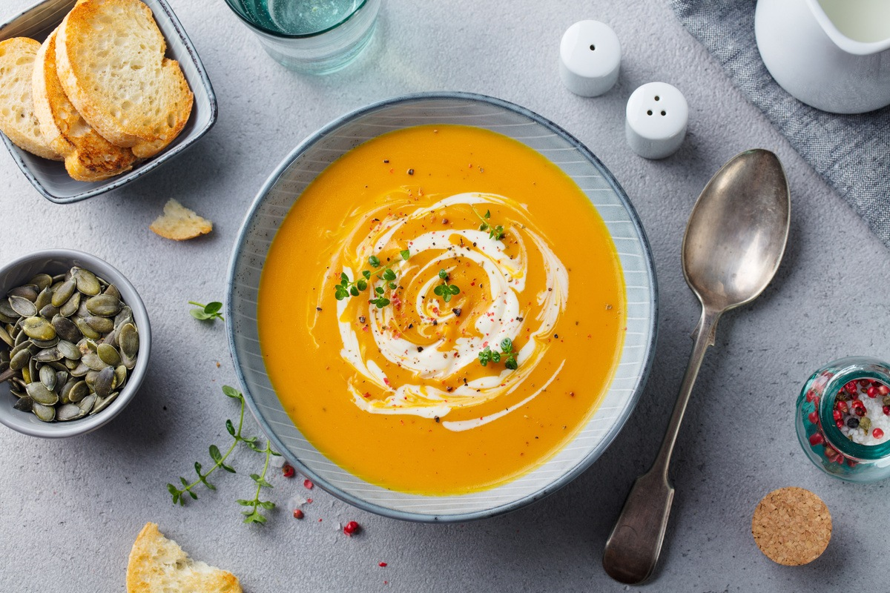
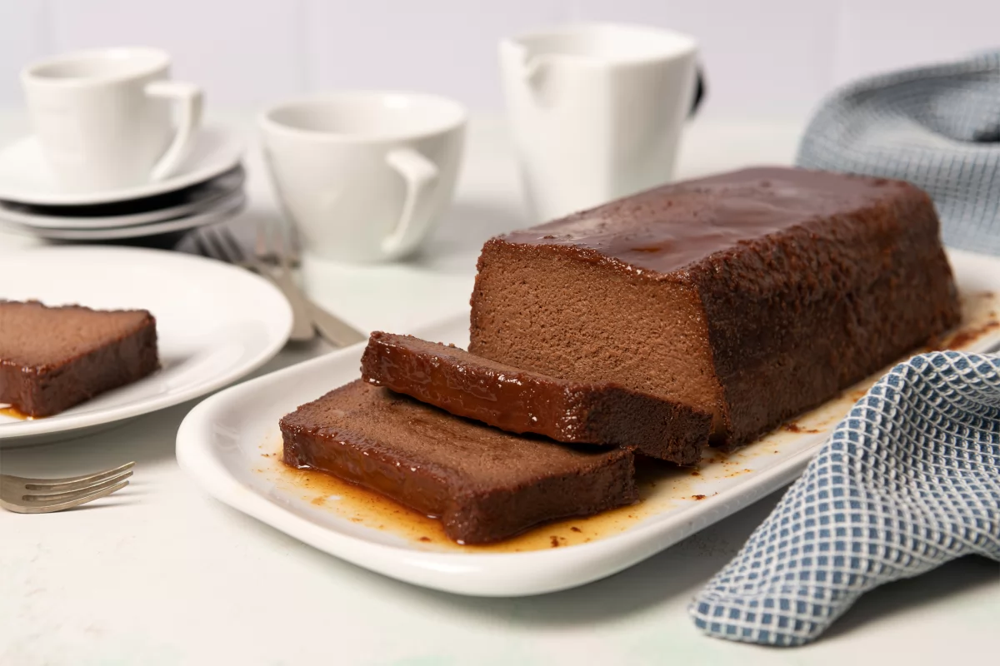
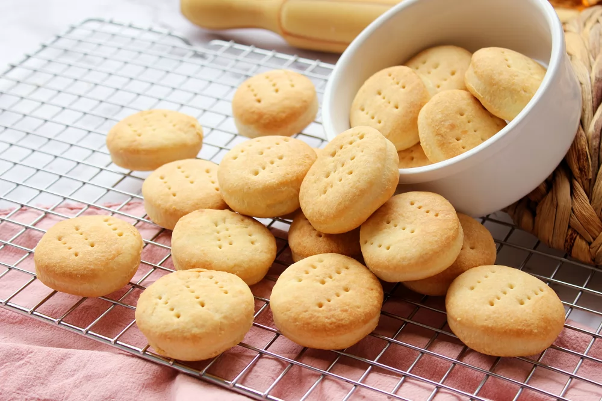

Sopa de calabaza
La sopa de calabaza es uno de los platos más básicos de la cocina que no pueden faltar en tu menú en otoño e invierno, cuando esta hortaliza se encuentra en plena temporada.
RecetaPudin de chocolate
El pudin de chocolate es una versión del clásico postre de aprovechamiento que hará las delicias de los más golosos. Con esta receta, podremos aprovechar los restos de pan duro que nos vayan quedando.
RecetaBizcochitos de grasa
Unas galletas saladas tradicionales de la cocina argentina, que se caracterizan por la grasa de vaca, uno de sus ingredientes principales. Su delicioso sabor y textura ligeramente hojaldrada te encantará.
RecetaTortitas de platano

Las tortitas de plátano es un desayuno o merienda genial. Se preparan en un periquete y resultan un bocado delicioso.
RecetaTortilla francesa

La tortilla francesa no deja de ser una omelette. Una receta muy sencilla, perfecta para una cena rápida cuando nos falta tiempo o ideas para algo más elaborado.
Receta